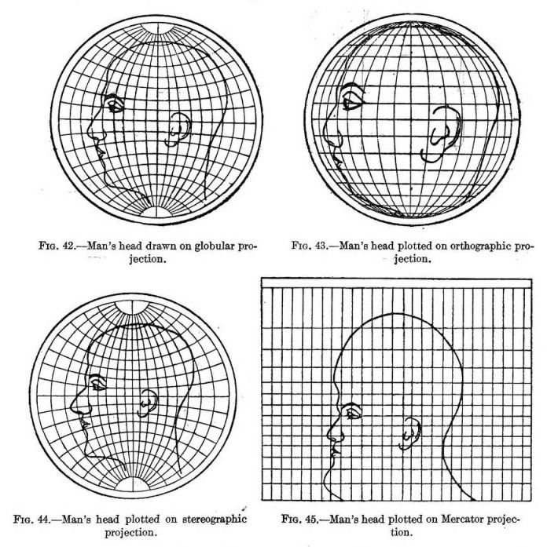

8 L08: GIS II
8.1 Creating Base Maps
Projections; examples; https://thetruesize.com/Understanding main map components: layers of points, lines, polygons and rasters- Construct a base map, step by step.
- adding main layers
- customizing map with additional goodies
- saving maps
- Examples of maps:
- Europe
- Islamic world provinces
- PS: Maps as Art:
- Vienna
8.1.1 Goals
…
8.1.2 Software
- R
8.1.3 Additional Materials
…
8.2 Corer concepts and teir practical implementations
8.2.1 Projection Issues

See, https://en.wikipedia.org/wiki/List_of_map_projections.
Website https://thetruesize.com/ is a nice tool for demonstrating how projection affects our perceprion of reality. On te following two screenshots you can see how the “sizes” of Russia (~17,1 mln km2) and China (c. 9,6 mln. km2) change when they change places.


8.2.2 A Digital Map: Layers of Goodness

- Layers:
- Analytical Layer
- Our Data
- Annotation/Legend
- Social Geography
- Political Boundaries
- Settlements, etc.
- Physical Geography
- Types of surface (raster)
- Continents / Coastal Line
- Elevation profile (raster)
- Rivers, Lakes, etc.
- Base Layer: Graticule
8.2.3 Main Types of Data: Points, Lines, Polygons

SOURCE: There are 3 types of vector objects: points, lines or polygons. Each object type has a different structure. Image Source: Colin Williams (NEON), via: www.earthdatascience.org
Analytical Layers:
- Our Data
- Points:
- item1, x[1], point(lat, lon)[2]; item2, x[1], point(lat, lon)[2]; item3, x[1], point(lat, lon)[2]; … itemX, x[1], point(lat, lon)[2];
- Lines:
- line1, x[1], {from(lat, lon)[2], to(lat, lon); from(lat, lon)[2], to(lat, lon); from(lat, lon)[2], to(lat, lon); … from(lat, lon)[2], to(lat, lon);}[2] … lineX …
- Polygons:
- polygon1, x, area(lat1, lon1; lat2, lon2; … latX, lonX; … lat1, lon1)[2] … polygonX …
- Points:
- Annotation/Legend
- Our Data
[1] where x is a categorical parameter; [2] lat/lon: decimal coordinates (not DMS)
8.2.4 Getting some libraries
install.packages(c("cowplot", "googleway", "ggplot2", "ggrepel", "ggspatial", "libwgeom", "sf", "rnaturalearth", "rnaturalearthdata", "rnaturalearthhires"))
install.packages("raster", "rgdal")8.2.5 Getting some data
- Terrain Rasters: … (Source: https://www.naturalearthdata.com/);
- Actually, let’s skip on these tey are rather tricky with R. In most cases, you do not really need raster layers: raster data is usually very large in size and is too robust, which will only obscure what you want to highlight on your map; if you are convinced that you do need to use raster data, see: https://datacarpentry.org/r-raster-vector-geospatial/; also: https://geocompr.robinlovelace.net/adv-map.html
- Water bodies: (Source: https://www.naturalearthdata.com/)
- Cities: (Source: https://simplemaps.com/data/world-cities)
- … ?
8.2.6 Creating the Base Map
library(tidyverse)
library(sf)## Warning: package 'sf' was built under R version 4.0.2## Linking to GEOS 3.8.1, GDAL 3.1.4, PROJ 6.3.1Let’s load the first base layer of geographical data (I am using “medium” scale for speed here; for your rfine maps you might want to use higher resolution: scale = "large"):
library(rnaturalearth)## Warning: package 'rnaturalearth' was built under R version 4.0.2library(rnaturalearthdata)## Warning: package 'rnaturalearthdata' was built under R version 4.0.2world <- ne_countries(scale = "medium", returnclass = "sf")So, here is our base map. Something is missing…
theme_set(theme_bw())
xlim=c(-12,80); ylim=c(10,50)
ggplot(data = world) +
geom_sf(fill="white", color="white") +
coord_sf(xlim = xlim, ylim = ylim, expand = FALSE) +
theme(panel.background = element_rect(fill = "grey90"))
Let’s try to add rivers… and the Aral Sea, which almost completely disappeared in the past 40 years of so. For this, we will need to get relevant data files—most likely in shape format used in GIS applications like ArcGIS and QGIS. Googling usually works for finding relevant data. Files for the Aral Sea: http://www.marineregions.org/gazetteer.php?p=details&id=4281. Working with shape files is a bit tricky and we need some extra steps to convert shape files into something that R understands, namely, dataframes.
library(rgdal) # R wrapper around GDAL/OGR## Warning: package 'rgdal' was built under R version 4.0.2## Loading required package: sp## rgdal: version: 1.5-23, (SVN revision 1121)
## Geospatial Data Abstraction Library extensions to R successfully loaded
## Loaded GDAL runtime: GDAL 3.2.1, released 2020/12/29
## Path to GDAL shared files: /Library/Frameworks/R.framework/Versions/4.0/Resources/library/rgdal/gdal
## GDAL binary built with GEOS: TRUE
## Loaded PROJ runtime: Rel. 7.2.1, January 1st, 2021, [PJ_VERSION: 721]
## Path to PROJ shared files: /Library/Frameworks/R.framework/Versions/4.0/Resources/library/rgdal/proj
## PROJ CDN enabled: FALSE
## Linking to sp version:1.4-5
## To mute warnings of possible GDAL/OSR exportToProj4() degradation,
## use options("rgdal_show_exportToProj4_warnings"="none") before loading rgdal.
## Overwritten PROJ_LIB was /Library/Frameworks/R.framework/Versions/4.0/Resources/library/rgdal/projlibrary(ggmap) # for fortifying shapefiles (converting GIS files into data frames)## Warning: package 'ggmap' was built under R version 4.0.2## Google's Terms of Service: https://cloud.google.com/maps-platform/terms/.## Please cite ggmap if you use it! See citation("ggmap") for details.##
## Attaching package: 'ggmap'## The following object is masked from 'package:tidygeocoder':
##
## geocodeNB: We need ggmap library, because it has a function—fortify()—that converts GIS data (*.shp files) into data frames with which R works. If you try to install ggmap library, you will most likely get an error, as the CRAN ggmap version is for an older version of R; we can try to install the latest version directly from the developer. Such practice has its advantages and disadvantages, keep this in mind! ggmap developer version is hosted at https://github.com/dkahle/ggmap.
#install.packages("devtools")
#devtools::install_github("dkahle/ggmap")
#library(ggmap) # for fortifying shapefilesNow, let’s read in the shapefile, using the path to the shapefile and the shapefile name minus the extension as arguments. Keep in mind, that the first argument—the path—should not have the trailing /. (See, readOGR)
First, download the following two files and unzip them (change paths to files if necessary!):
# Rivers
rivers <- readOGR("./data_temp/layer.riverData", "ne_50m_rivers_lake_centerlines")## OGR data source with driver: ESRI Shapefile
## Source: "/Users/romanovienna/Dropbox/6_Teaching_New/_rgis_course/rgis_univie2021_draft/data_temp/layer.riverData", layer: "ne_50m_rivers_lake_centerlines"
## with 462 features
## It has 32 fields
## Integer64 fields read as strings: ne_id## Warning in readOGR("./data_temp/layer.riverData",
## "ne_50m_rivers_lake_centerlines"): Dropping null geometries: 461rivers_df <- fortify(rivers)
# adding the Aral sea -- historical basin
aral_sea <- readOGR("./data_temp/layer.aral_sea", "worldglwd1")## OGR data source with driver: ESRI Shapefile
## Source: "/Users/romanovienna/Dropbox/6_Teaching_New/_rgis_course/rgis_univie2021_draft/data_temp/layer.aral_sea", layer: "worldglwd1"
## with 1 features
## It has 28 fieldsaral_sea_df <- fortify(aral_sea)## Regions defined for each PolygonsLet’s try to save these as rData objects (*.rds) and load them, instead of preprocessing shape files everytime, which may take a while. Loading RDS files is just a jiffy. Keep in mind, that you can save any data into RDS file! This might be particularly valuable for storing intermediate results that you do not want to regenerate too often.
RDSfolder = "./data_temp/map.objects/"
saveRDS(rivers_df, paste0(RDSfolder,"rivers_df.rds"))
saveRDS(aral_sea_df, paste0(RDSfolder,"aral_sea_df.rds"))
rivers_df <- readRDS(paste0(RDSfolder,"rivers_df.rds"))
aral_sea_df <- readRDS(paste0(RDSfolder,"aral_sea_df.rds"))You can now comment out code in shape_data chunk and saveRDS() lines in RDS_files chunk. The entire script will work much faster this way.
waterColor = "lightsteelblue2" # "grey90"
xlim=c(-12,80); ylim=c(10,50)
ggplot(data = world) +
geom_sf(fill="white", color="white") +
# rivers and the aral sea
geom_path(data = rivers_df,aes(x = long, y = lat, group = group), color = waterColor, size = .2) +
geom_polygon(data = aral_sea_df,aes(x = long, y = lat, group = group), color = waterColor, fill = waterColor, size = .2) +
# map limits and theme
coord_sf(xlim = xlim, ylim = ylim, expand = FALSE) +
theme(panel.background = element_rect(fill = waterColor))Let’s add a scale bar. This we can do with the library ggspatial (location parameters are as follows: tl, tr, bl and br — for top left, top right, bottom left, and bottom right).
library("ggspatial")## Warning: package 'ggspatial' was built under R version 4.0.2xlim=c(-12,80); ylim=c(10,50)
ggplot(data = world) +
geom_sf(fill="white", color="white") +
# rivers and the aral sea
geom_path(data = rivers_df,aes(x = long, y = lat, group = group), color = waterColor, size = .2) +
geom_polygon(data = aral_sea_df,aes(x = long, y = lat, group = group), color = waterColor, fill = waterColor, size = .2) +
# annotation scale
annotation_scale(location = "bl", width_hint = 0.25) +
annotation_north_arrow(location = "bl", which_north = "true",
pad_x = unit(0.0, "in"), pad_y = unit(0.2, "in"),
style = north_arrow_fancy_orienteering) +
# map limits and theme
coord_sf(xlim = xlim, ylim = ylim, expand = FALSE) +
theme(panel.background = element_rect(fill = waterColor),
axis.title.y=element_blank(),
axis.title.x=element_blank())## Scale on map varies by more than 10%, scale bar may be inaccurate
For convenience, some of this information can be stored into variables for easy reuse:
baseplot <- ggplot(data = world) +
geom_sf(fill="white", color="white") +
# rivers and the aral sea
geom_path(data = rivers_df,aes(x = long, y = lat, group = group), color = waterColor, size = .2) +
geom_polygon(data = aral_sea_df,aes(x = long, y = lat, group = group), color = waterColor, fill = waterColor, size = .2) +
# annotation scale
annotation_scale(location = "bl", width_hint = 0.25) +
annotation_north_arrow(location = "bl", which_north = "true",
pad_x = unit(0.0, "in"), pad_y = unit(0.2, "in"),
style = north_arrow_fancy_orienteering) +
# map limits and theme
coord_sf(xlim = xlim, ylim = ylim, expand = FALSE)
themeParameters <- theme(panel.background = element_rect(fill = waterColor),
axis.title.y=element_blank(),
axis.title.x=element_blank())
baseplot + themeParameters## Scale on map varies by more than 10%, scale bar may be inaccurate
Let’s add some data. You can download this dataset with cities of the world.
8.3 Homework
…
Submit your knitted notebook.
8.4 Submitting homework
- Homework assignment must be submitted by the beginning of the next class;
- Email your homework to the instructor as attachments.
- In the subject of your email, please, add the following:
070184-LXX-HW-YourLastName-YourMatriculationNumber, whereLXXis the numnber of the lesson for which you submit homework;YourLastNameis your last name; andYourMatriculationNumberis your matriculation number.
- In the subject of your email, please, add the following: